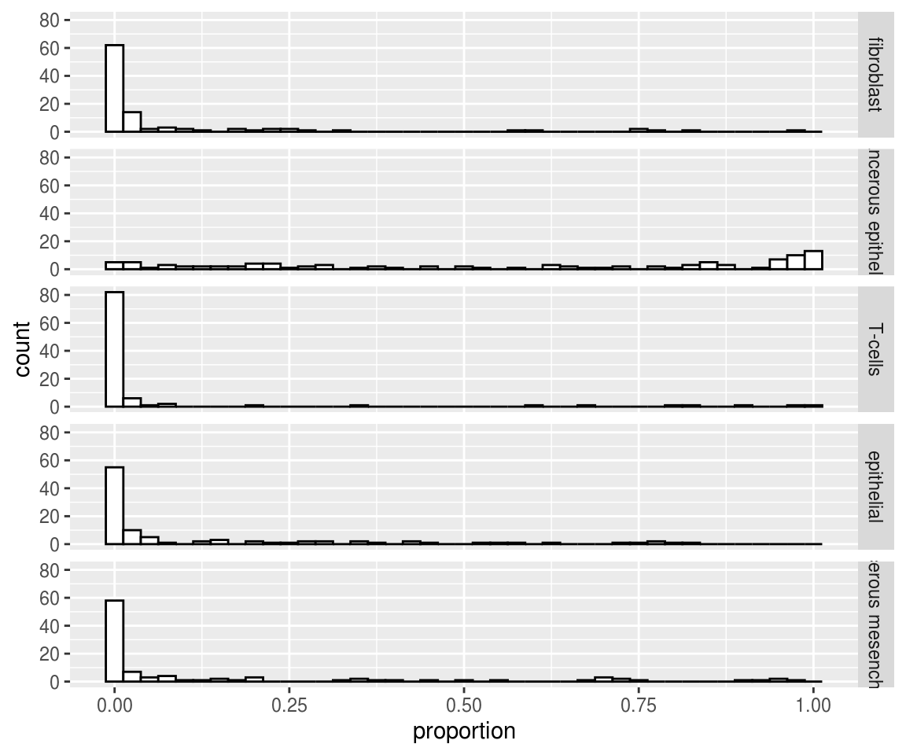

simulations.RmdTo simulate the T matrix of cell type-specific methylation profiles, we use different studies from GEO. For the cancerous epithelial line, we use the cell line GSM1560930 and for the cancerous mesenchymal line, we use the cell line GSM1560925 from the same study. For the fibroblast line, we use the cell line GSM1354676 after conversion from m-value to b-value. For the T cell line, we use the GSM1641099 and for the control epithelial cell, we use the GSM2743808.
plate_effect contains 22 median plate effects (TCGA experimental batch effect) for 1000 random probes. For each probe, we model plate effects using multiplicative coefficients that measure the ratio of mean methylation values of a plate on mean methylation of the (arbitrarily) 1st plate. Each coefficient is estimated by the median of the 1000 ratios of methylation values. These multiplicative coefficients are then used on all probes to model batch effects on the matrix D of individual convoluted methylation profiles.
sites_sexe indicates the 1397 probes that are correlated with sex in the TCGA dataset. sites_sexe contains the linear regression coefficients used to shift methylation value of female-associated T matrices.
## data_fib data_epit data_lymph data_epit_ctrl data_mes
## cg00000292 0.71128608 0.95267309 0.87396160 0.36933064 0.90817439
## cg00002426 0.42943911 0.07660021 0.89707360 0.08261418 0.03621291
## cg00003994 0.06596913 0.04783730 0.09655583 0.14852395 0.02077592
## cg00005847 0.13941766 0.89655738 0.20705830 0.32145031 0.86761018
## cg00007981 0.06315487 0.01952210 0.03124379 0.06667628 0.01059850
## cg00008493 0.97435463 0.98140307 0.88127190 0.87061069 0.99020340plate_effect = readRDS(url("https://zenodo.org/record/3247635/files/plate_effect.rds"))
head(plate_effect)## plates effect
## 1 0752 1.0000000
## 2 0945 0.7727658
## 3 1104 0.9788447
## 4 1205 0.9082106
## 5 1626 1.2996661
## 6 1756 1.5209063sex_reg = readRDS(url("https://zenodo.org/record/3247635/files/regression_sexe.rds"))
coeff_luad = sex_reg$luad
coeff_lusc = sex_reg$lusc
sites_sexe = colnames(coeff_luad)[coeff_luad[8,] < (0.01) | coeff_lusc[8,] < (0.01)]
coeff_sexe = apply(cbind(coeff_luad[2, ], coeff_lusc[2, ]), 1, mean)
head(sites_sexe)## [1] "cg00012386" "cg00029931" "cg00121904" "cg00126657" "cg00126698"
## [6] "cg00128197"head(coeff_sexe)## cg00000292 cg00002426 cg00003994 cg00005847 cg00007981
## -0.014126006 -0.017183944 0.002714856 -0.007344126 0.002157294
## cg00008493
## -0.005986481The function compute_A simulates the A matrix of cell types proportion using a Dirichlet distribution. n is the number of patients, prop define the different cell type proportions (here it is 10% for fibroblast, 60% for cancerous epithelial, 5% for T cells, 15% for control epithelial and 10% for cancerous mesenchyme cells). alpha is equal to the sum of the parameter of the Dirichlet distribution. It is inversely related to variation of proportions in the population. In the simulations, we choose alpha=1 that corresponds to a population with variable proportions.
A <- medepir::compute_A(n = 100, prop = c(0.1, 0.6, 0.05, 0.15, 0.1), alpha = 1)
# plot histogram of proportion for each cell type
rownames(A) <- c("fibroblast", "cancerous epithelial", "T-cells", "epithelial", "cancerous mesenchyme")
dat <- as.data.frame.table(t(A))
colnames(dat) <- c("indiv", "cell_type", "proportion")
ggplot2::ggplot(dat, ggplot2::aes(x = proportion)) + ggplot2::geom_histogram(colour = "black", fill = "white", binwidth = 0.025) +
ggplot2::facet_grid(cell_type ~ .)
The function create_exp_grp makes a random experimental dataset. It samples randomly the plate, the sex and/or the age of each patient.
The function compute_D allows to obtain the D matrix according to the D = TA model with all the confounding factors. The sex effect is added directly to the T matrix, while the plate effect is added after matrix multiplication.
Finally, the function add_noise add a random gaussian noise to the D matrix.
exp_grp = medepir::create_exp_grp(n = 100, plates = plate_effect[, 1],
sex = TRUE, age = FALSE)
D = medepir::compute_D(A_mat = A, T_mat = T_brute, exp_grp, sites_sex = sites_sexe,
coeff_sex = coeff_sexe, plate_effect = plate_effect)
D_noise = medepir::add_noise(data = D, mean = 0)We use the package RefFreeEwas to make the deconvolution.
results_RFE = medepir::RFE(D_noise, nbcell = 5)## The "ward" method has been renamed to "ward.D"; note new "ward.D2"## Min. 1st Qu. Median Mean 3rd Qu. Max.
## 1.100e-07 3.369e-03 7.839e-03 1.200e-02 1.590e-02 1.847e-01
## Min. 1st Qu. Median Mean 3rd Qu. Max.
## 0.000000 0.002129 0.004847 0.008314 0.010207 0.241378
## Min. 1st Qu. Median Mean 3rd Qu. Max.
## 0.000000 0.001689 0.003922 0.007316 0.008809 0.182657
## Min. 1st Qu. Median Mean 3rd Qu. Max.
## 0.000000 0.001312 0.003136 0.006166 0.007526 0.132185
## Min. 1st Qu. Median Mean 3rd Qu. Max.
## 0.000000 0.001022 0.002461 0.004864 0.006089 0.086963
## Min. 1st Qu. Median Mean 3rd Qu. Max.
## 0.0000000 0.0008693 0.0021303 0.0041804 0.0052788 0.0658586
## Min. 1st Qu. Median Mean 3rd Qu. Max.
## 0.0000000 0.0008376 0.0020387 0.0039829 0.0049940 0.0701684
## Min. 1st Qu. Median Mean 3rd Qu. Max.
## 0.0000000 0.0008229 0.0019917 0.0038808 0.0047531 0.0721993
## Min. 1st Qu. Median Mean 3rd Qu. Max.
## 0.0000000 0.0007939 0.0019125 0.0037288 0.0044946 0.0696782The function compare_A computes the Mean Absolute Error between the A matrix used for the simulation and the A matrix computed by the method of deconvolution.
medepir::compare_A(A_r = A, A_est = results_RFE$A)## [1] 0.08228577